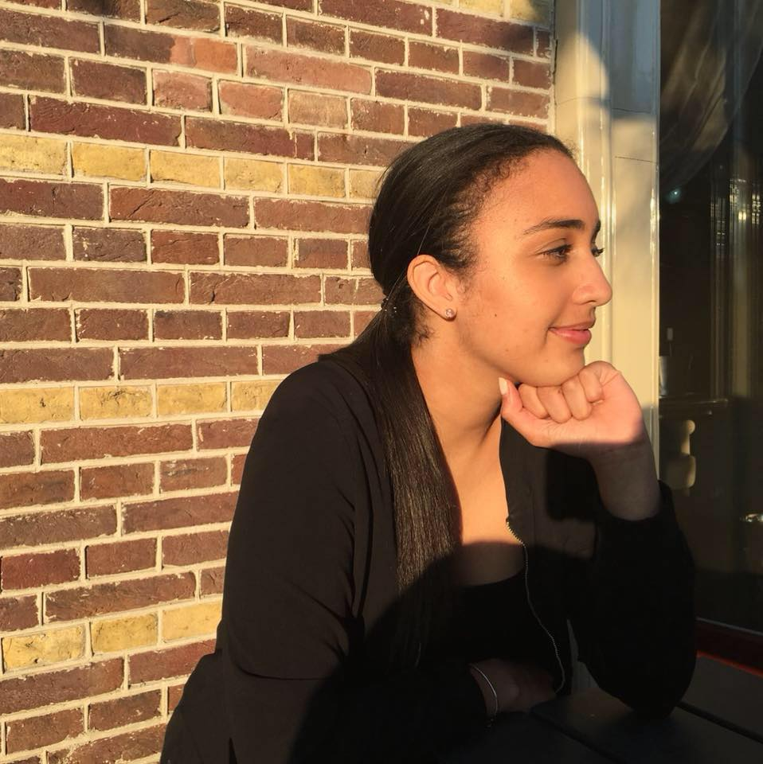

Nicole Vervelde
About Nicole
University of Miami
I was born in Amsterdam ,The Netherlands but moved around as a child.
I have lived in Ireland, Puerto Rico, Nigeria and the United Kingdom.
I graduated Highschool in London in May 2017, where I resumemd my education
at the University of Miami as a Public Relations major.

Work Experience
Internships
Halpern Agency
- Write press releases for clients such as Coco and Eve using
in Design.
- Monitor online coverage for Five Guys, Bumble and Uggs, in which every post
was recorded on an excel document.
- Establish relationships with multiple media outlets such as Vogue Magazine, Evening Standard, The Guardian,
Tmr Magazine and Dazed Magazine.
- Intense research to find new influencers to join PR campaigns.
- Expert in the use of PR/Media tools such as Gorkana.
- Collaborated with various teamates when working on day-to-day tasks and devising new concepts.
Click here for more for information on Halpern Agency
Prep Organization
- Worked at events such as Miami Open, Jason Taylor Foundation and the Bass Museam
- Involves managing mutiple social media acounts and PR campaigns
- Organizing press conferences and creating strong relationships with writers
Table of Skills
| Skills |
Year |
| Indesign Certificate |
2018 |
| Member of YPO |
2017 |
| First Aid Certificate |
2016 |
Click here for more for information on YPO
For more information email nicolevervelde@hotmail.com